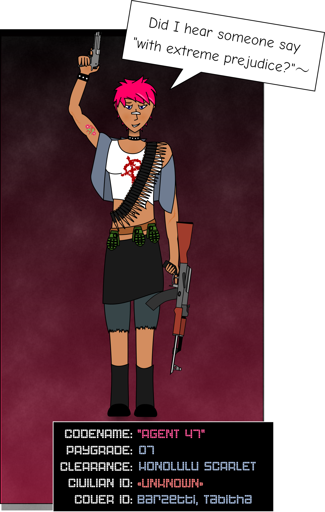

FILE REQUEST
| FILE IDENTIFIER | F01.2.47 |
|---|---|
| FILE TITLE | "Dossier: Agent 47" |
| SECURITY CLASS | TEMPEST HAWK |
| USER IDENTITY | U-23719 |
|---|---|
| USER CLEARANCE | LONDON LILAC |
| ACCESS LOCATION | SUBSTATION 53 :: TERMINAL 76 |
| USER CODEWORD CLEARANCES | |
| * SOLEMN CANDLE | * EMPTY HEARTH |
| * MYSTIC PINES | * FORGOTTEN VIGIL |
| * SORROWFUL CURRENT | |
< < REQUEST SENT > >
- This request has been logged for security purposes. Be advised that any network traffic may be selected at random for audit by the Clearance Review Board.
< < PARTIAL ACCESS GRANTED > >
- Displaying file
Dossier: Agent 47
Overview
Agent 47 is one of the Department's most valued field personnel. She is currently operating as a free agent in Naples, Italy where she leads a lesbian biker gang under the name "Tabitha Barzetti." Agent 47's civilian name is unknown, and, due to the circumstances of her hiring, she has not been asked to divulge this information.
Skills
Agent 47 has received extensive training as an operative from both the Department and other groups. She came on board with a wealth of field experience already under her belt, and has since served in over one hundred combat engagements. Due to her particular skillset, Agent 47 is less suited to clandestine action and infiltration.
She has demonstrated proficiency with a wide variety of weapons, though she has expressed a preference for grenades, rocket launchers, and assault rifles, with particular affection for the original Soviet-built 1947 Kalashnikov ("AK-47").
Agent 47 is also highly skilled in hand-to-hand combat, and is occasionally brought in to train or evaluate recruits to high-level wetwork teams.
In terms of subterfuge and subtlety, Agent 47 leaves much to be desired. She can be trusted not to betray confidential information, even unwittingly, but has demonstrated an inability to concoct or adhere to cover stories. She is therefore not suited to covert actions.
Nonetheless, on her own home turf, she is a valuable source of actionable intelligence, largely due to her own network of contacts. This was the original reason she was evaluated for free agent status, a role that has since been judged to suit her well for many reasons.
Psychological profile
Agent 47 displays an extreme love of and propensity for violence bordering on the sociopathic. However, she has demonstrated the capability for remorse on many occasions, and consistently acts in accordance with her personal morals. For this reason, she is not considered pathological.
She shows great distrust for authority and identifies strongly as "anti-establishment," but finds great satisfaction in "being a part of something." She should therefore be kept as a free agent, given assignments only when her skillset is uniquely appropriate, and above all treated with respect. Agent 47 currently exhibits a sense of camaraderie with fellow Department personal; this is to be encouraged. She should preferred for assignments that reinforce her relationships with other personnel and her perception of shared values with the Department. Access to intelligence and records that could disrupt this perception should be denied when practical.
Agent 47 has shown remarkable confidence and bravery (bordering on bravado) in stressful situations, and can be counted on to keep her head about her at all times. For this reason, she should be considered for leadership roles in high-risk mission-critical operations.
Personnel history
Date of Recruitment: July 19, 1993
Division: Field Operations
Notable Engagements: Paris Incident, Tripoli Skirmishes, the January War, Siege of Montenegro, [CL: TEMPEST EGRET]
Specialties: Heavy weapons, demolition, crowd control
Disciplinary Actions:
- 17 citations for unjustifiable use of force
- 2 suspensions for violence against coworkers (1 vacated on appeal)
- 1 confinement for insubordination